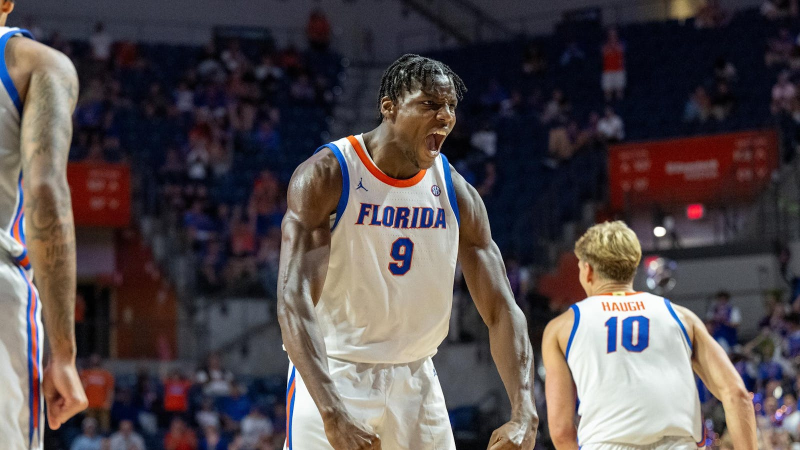

Rueben Chinyelu
This is Rueben Abuchi Chinyelu. He was born on September 30th, 2003 in Enugu Agidi, a village in Anambra State. Chinyelu started playing basketball in 2018 in Lagos when he joined Raptors Basketball Academy. Later, he joined the NBA Academy Africa in Saly, Senegal. A little after at the 2022 NBA Academy Games in Atlanta, he won the championship and led the tournament in rebounding. In November 2022 Chinyelu committed to play for the Washington State Cougars. After one season there he hit the transfer portal and decided on the Florida Gators. In the national championship he posted 3 points, 5 rebounds, and 1 block.
Some of Chinyelus's accomplishments include :
- FIBA U16 African Championship Bronze Medal(2019)
- SEC Tournament Title (2025)
- NCAA Tournaments Title(2025)
Rueben Chinyelu, where do I begin, your dominance in the paint is so incredible thank you king ❤️❤️